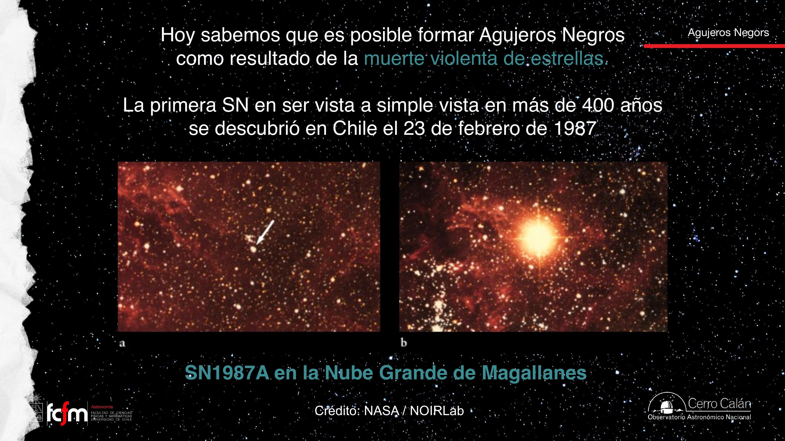
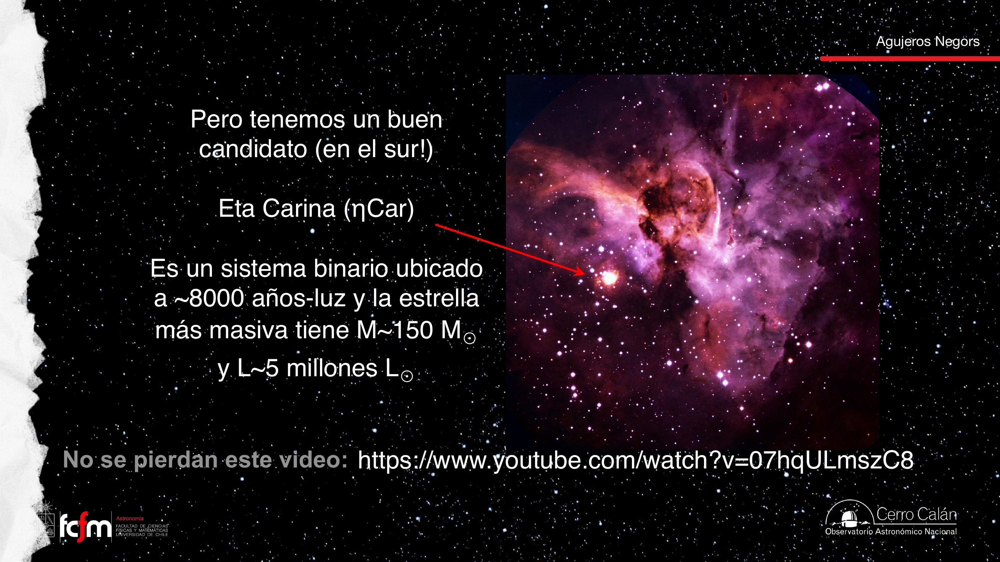
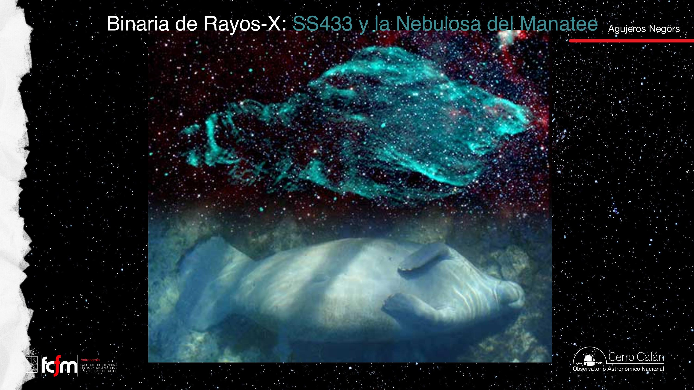
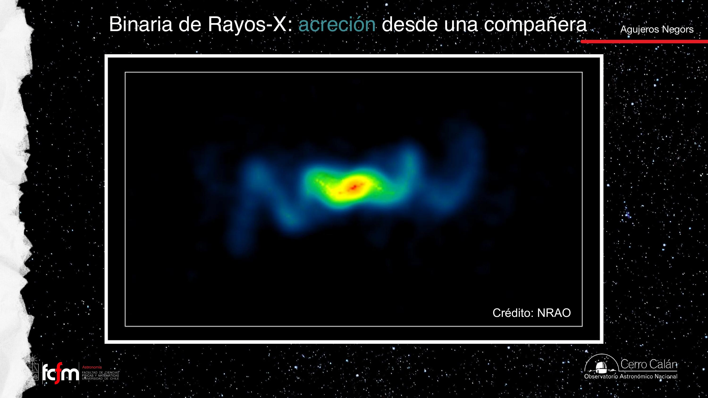
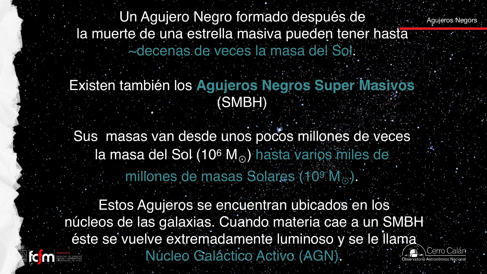
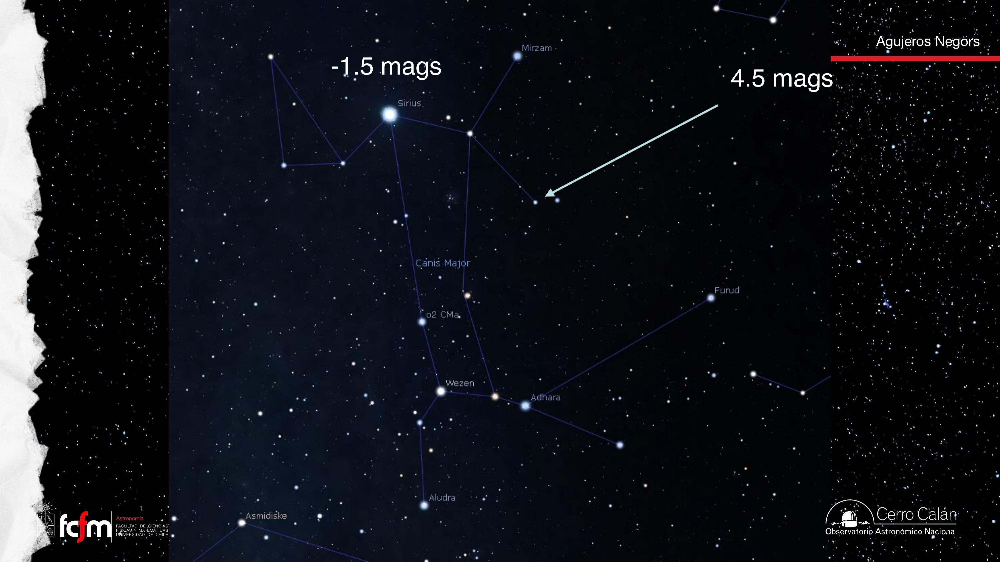
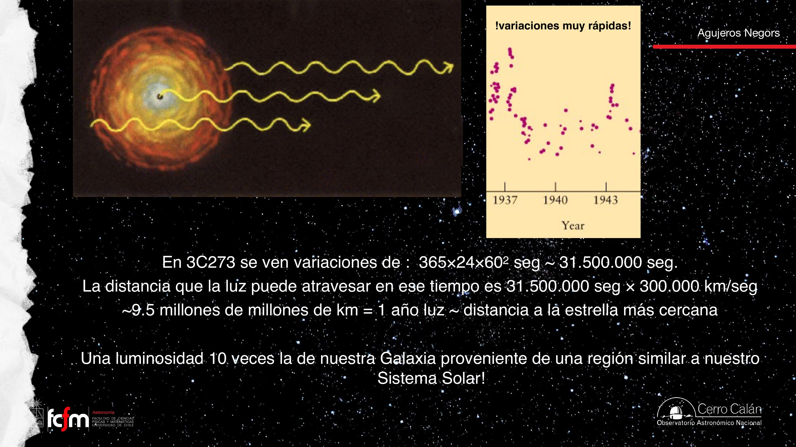

Agujeros negros: de Schwarzschild a los AGN
Horizonte, remanentes estelares, detección por acreción y dinámica, camino hacia cuásares.
Lo decisivo no es solo la masa sino la compacidad. La clase une predicción relativista, supernovas, binarias de rayos X y agujeros negros supermasivos activos.
Schwarzschild (1916)
«Churchill» en audio = Karl Schwarzschild.

Horizonte y compacidad
Horizonte = límite causal, no superficie material. Misma masa: Sol vs. enana blanca vs. BH → mismo campo lejos, pozo distinto cerca. Estrella de neutrones ~10 km vs. horizonte de BH similar: la EN tiene superficie.

Espaguetificación y gusanos
Mareas intensas cerca del BH. Puentes Einstein–Rosen: matemática sin evidencia observacional. ISCO: órbitas inestables interior.

Remanentes y supernovas
~1011 estrellas en galaxia tipo Vía Láctea; ~108 BH estelares. Baja masa → enana blanca; alta masa → SN → EN o BH.
SN 1987A (LMC): ~24 neutrinos; Cangrejo (1054); Eta Carinae candidata.


Detectar agujeros negros
Acreción: disco caliente, rayos X (~200 binarias X en la Vía Láctea). Dinámica: órbitas estelares (Sgr A*).

Jets, mareas, TDE
SS 433: jets precesionando (sacacorcho). Colas de marea HI (Magallanes). TDE: estrella despedazada por BH.

SMBH y AGN
SMBH: 106–1010 M☉ en núcleos. Sgr A* ~4×106 M☉. Alimentados → AGN.
Cuásares y variabilidad
En los años 50–60 aparecieron fuentes cuasi estelares de radio (QSO). Parecían estrellas puntuales pero con luminosidad y espectros anómalos.
Maarten Schmidt (1963): en 3C 273 las líneas «desconocidas» eran Hα, Hβ, Hγ… con gran redshift (z ≈ 0,16). Objeto extragaláctico ultraluminoso: L ~ 10× la de la Vía Láctea. El núcleo brilla tanto que opaca la galaxia anfitriona.
Argumento de variabilidad: si el brillo cambia en tiempo Δt, la región emisora no puede ser mucho mayor que R ≲ c·Δt (cota superior; la señal no puede coordinar un cambio instantáneo en toda una galaxia). Variaciones en ~1 año → tamaño ≲ 1 año-luz; variaciones en días → escala del Sistema Solar, pero con luminosidad de muchas galaxias → requiere acreción sobre agujero negro supermasivo.
La acreción convierte energía gravitacional en radiación con eficiencia η hasta ~10% (Ṁc²), muy por encima de la fusión nuclear estelar (~0,7%). Es el motor de los AGN. Solo ~10% de AGN muestran jets de radio prominentes; el resto son «radio-quiet» pero igualmente luminosos en otras bandas.


| Concepto | Nota |
|---|---|
| r_s | Horizonte BH estático |
| Binaria X | ~200 en Vía Láctea |
| TDE | Flare por estrella rota |
| AGN | SMBH alimentado; cuásar si muy luminoso |
Exámenes de práctica
10 exámenes de 5 preguntas (3 alternativas autocorregibles + 2 escritas).